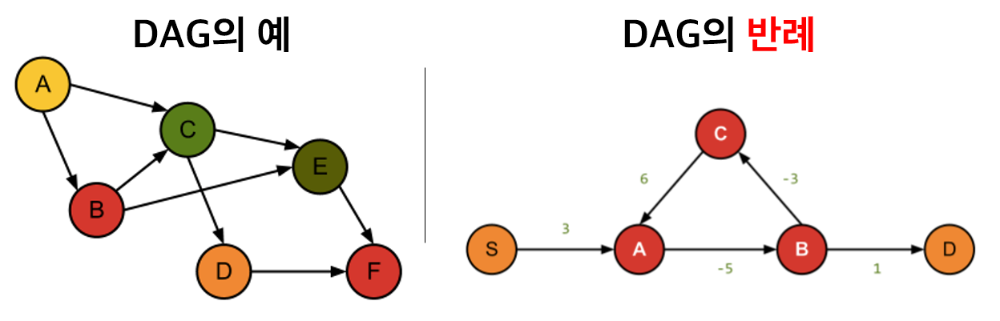
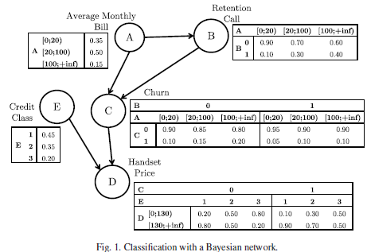
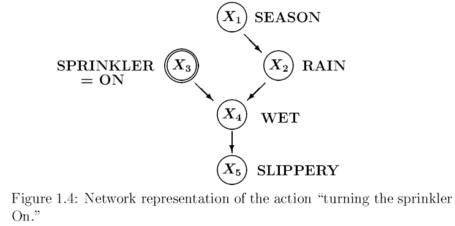
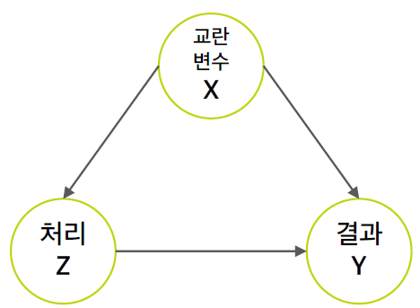
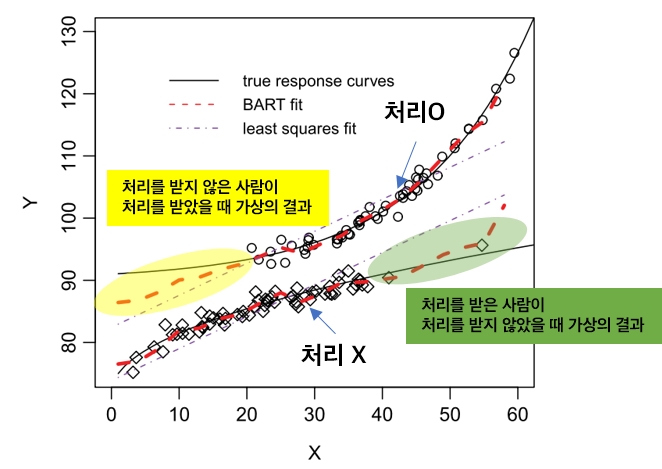

- 이 글은 엄격한 실험이 아닌 관측 환경 (observational studies)에서 인과관계 추론을 위해 사용하는 베이지안 네트워크 (Bayesian Network)와 잠재적 결과 (Potential outcome) 방법론에 대한 글입니다.
- 인과 추론에 대한 소스를 더 확인하시려면 Shubhanshu Mishra님의 Awesome Causality
[link]를 추천합니다.
인과관계 추론의 정의
인과관계 추론이란 어떤 결과에 대한
- 원인을 규명하고
- 그 원인으로 인한 효과를 추정하는 방법입니다.
흔히 통계학과생들은 “실험계획법” 과목에서 다른 변수들을 최대한 고정시키고 처리 효과를 구하는 방법에 대해 배웁니다. 통계학의 아버지인 "로널드 A. 피셔"의 밀크티 실험이 이 예를 보여주는데요.
영국에 한 여인이 밀크티에 홍차를 먼저 넣었는지 우유를 먼저 넣었는지 구분할 수 있다 주장했다 합니다. 이를 본 다른 사람들은 모두 비웃었지만 피셔는 진지하게 실험을 시작하죠. (이과 망했으면)
한 여인에게 '홍차를 먼저 넣고 만든 밀크티’와 '우유를 먼저 넣고 만든 밀크티’를 네 잔씩 만들어 랜덤하게 시음하도록 해서 그녀가 알아맞출 확률을 계산했다고 합니다. 결과적으로 그녀는 1/70의 확률을 뚫고 모두 맞췄다고 합니다.
TMI: 결론적으로 홍차를 넣고 우유를 넣으면 단백질이 변형되어 맛이 떨어지기 때문에, 우유 먼저 넣은 밀크티가 더 맛있다고 합니다.
이게 **랜덤화 추출 (randomization)**의 시초입니다. 이처럼 인과 관계 추론을 위해 필요한 건 RCTRandomized Clinical Trial, 무작위 임상 시험 환경입니다. RCT란 가능한 변수들을 최대한 고정하고 (통제하고) 처리만 변화시켜가면서 효과가 어떻게 바뀌는 지 실험하는 환경을 의미합니다 (의학 분야 외에서도 통제된 환경에 범용적으로 쓰이는 용어입니다!).
현대에서 이러한 유사 실험의 예는 바로 A/B test입니다. 이에 대해서는 이전 포스팅에서 더 자세히 확인하실 수 있습니다.
그러나 A/B test는 돈, 시간이 많이 들고, 실제 데이터 특성 상 이러한 테스트를 하기에 어려울 수도 있습니다.
그럼 인과관계 추론하는 걸 포기했을까요?
아니죠, 뛰어난 학자들은 어떻게든 실험 통제를 하지 못한 관측 환경 (observational studies)에서 인과관계를 추론하고자 노력해왔습니다.
그 인과관계 추론의 갈래는 크게 두 가지입니다. (참고: Fan Li (2019) [pdf])
- Causal Graphical Models
- Potential Outcomes
인과 그래프 모형 (Causal Graphical Models)
**인과 그래프 모형 (Causal Graphical Models)**은 인과 관계를 DAGDirected Acyclic Graphs라는 그래프로 표현하는 방식입니다. 이를 Causal Bayesian Network로 칭하기도 하고, Belief Network라고도 칭하기도 합니다. 저는 이제부터 Bayesian Network로 통일해 부르겠습니다.
Bayesian Network는 변수들의 결합 확률 분포를 그래프로 나타낸 모형으로, 딥러닝과 달리 조건부 확률이 투명하게 공개되므로 "white-box model"입니다.
Bayesian Network B는 B=⟨G,Θ⟩로 두 개의 요소로 구성됩니다.G는 DAG를 의미하고 Θ는 조건부 확률 (conditional probability)의 집합을 의미합니다.
따라서, Bayesian Network를 이해하려면
- DAG
- Conditional Probability
에 대해 알아야겠죠?
DAG: Directed Acyclic Graphs

이미지 출처:
[link]
{:.figure}
DAG란 말 그대로 방향이 있고, 순환성은 없는 그래프를 의미합니다. 위의 그림의 DAG의 예처럼 "원인→결과"로 인과관계를 표시합니다. 즉 A는 B와 C의 원인이 되는 식이죠. 또한, 반례를 보면 알 수 있듯이, A→B→C→A처럼 순환구조가 있으면 안 됩니다.
DAG를 구성하는 요소는 Node와 **Edge (혹은 Arc)**입니다. 그림에서 보듯이 원으로 표시된 {A,B,C,…}는 Node에 해당하고, 어떠한 사건 혹은 변수를 의미합니다. Edge는 그림의 화살표 →를 의미해서, 노드들 간의 인과 관계를 나타냅니다.
예를 들어, A→B라 하면 A가 B의 원인이 되는데요. 원인인 A는 B의 **부모 (parent)**이고 결과인 B는 A의 **자식 (child)**이라 부릅니다.
그럼 이 DAG를 사람이 알아서 인과관계를 판단해서 그릴까요?
그러면 좀 부정확하겠죠. Bayesian network는 노드 간의 인과(연결) 관계를 파악하고 그들의 인과 효과를 추정하기 위해서
- 구조 학습 (Structure Learning)
- 모수 학습 (Parameter learning)
두 가지 과정을 거칩니다. 이는 다음 장에서 더 자세히 설명하겠습니다!
조건부 확률 (Conditional Probability)
고등학교 때 배운 조건부 확률 (Conditional Probability)는 특히 Bayesian Network에서 중요한 개념입니다.
조건부 확률은 사건 Y가 y의 값으로 주어졌을 때 X의 확률로, 수식으로 표현하면 다음과 같습니다.
P(X∣Y=y)=P(Y=y)P(X,Y=y)=∑x∈XP(Y∣X=x)P(X=x)P(Y∣X)P(X)
조건부 확률에서 분자는 X와 Y의 결합 확률 분포 (joint probability distribution), 분모는 주변부 확률 분포 (marginal probability distribution)라 합니다.
이를 확장해서 Bayesian Network는 여러 인과 관계를 조건부 확률로 표현합니다. Bayesian Network의 두 번째 요소인 Θ는 변수 Xi의 모든 가능한 값 xi에 대해 θxi∣Πxi=PB(xi∣Πxi)의 확률들의 집합입니다. 여기서 Πxi는 DAG에서 표현된 Xi의 직계 부모의 집합을 의미합니다. 이를 통해 Bayesian Network B는 다음의 결합 확률 분포를 표현할 수 있습니다.
참고로, 직계 부모라 하면 바로 위에 연결된 노드들을 말합니다.
PB(X1,…,Xn)=i=1∏nPB(Xi∣ΠXi)=i=1∏nθXi∣ΠXi
많이 어렵죠… 그러나 실제 값을 표현하면 좀 쉽습니다! 예를 들어
X1→X2→X3
의 결합 확률 분포는
PB(X1,X2,X3)=PB(X1)PB(X2∣X1)PB(X3∣X2)
입니다.
왜냐하면 X1의 부모는 없고, X2의 직계 부모는 X1뿐이고, X3의 직계 부모는 X2뿐이기 때문입니다.
따라서 결합 확률 분포에서
- 첫 번째 확률은 θX1∣ΠX1=PB(X1)이 되고,
- 두 번째 확률은 θX2∣ΠX2=PB(X2∣X1)이 되고,
- 세 번째 확률은 θX3∣ΠX3=PB(X3∣X2)
되어 이들을 곱해주면 결합확률 분포가 됩니다.
이제 실제 예시를 들어보겠습니다. Verbraken et al (2014)에서는 이익을 극대화하는 고객 철회 여부를 분류하기 위한 한 방법으로 Bayesian Network를 고려합니다.

이 논문에서는 A, B, D, E의 값이 주어졌을 때 고객이 서비스를 철회(C=1)할 확률은 어떻게 되는 지에 관심을 가집니다. 이 확률은 다음과 같이 계산됩니다.
P(C∣A,B,D,E)where P(C,A,B,D,E)P(A,B,D,E)=P(A,B,D,E)P(C,A,B,D,E)=P(A)⋅P(B∣A)⋅P(C∣A,B)⋅P(D∣C,E)⋅P(E),=c∈C∑P(C,A,B,D,E)
예를 들어, 평균 월별 요금 (A)이 [20;100) 사이, 서비스 유지 Call (B)를 하지 않았고, 송수화기 가격 (D)이 [0;130) 사이, 신용 등급 (E)이 1등급인 고객이 철회 ©를 할 확률과 하지 않을 확률을 구해봅시다.
-
철회할 확률
P(C=1∣A∈[20;100),B=0,D∈[0;130),E=1)=∑c∈{0,1}P(C=c,A∈[20;100),B=0,D∈[0;130),E=1)P(C=1,A∈[20;100),B=0,D∈[0;130),E=1)=0.0268+0.00240.0024=0.08
-
철회하지 않을 확률
P(C=0∣A∈[20;100),B=0,D∈[0;130),E=1)=1−P(C=1∣A∈[20;100),B=0,D∈[0;130),E=1)=0.92
입니다. C=1일 때와 C=0일 때 각 확률의 분자를 계산해보면
P(C=0,A∈[20;100),B=0,D∈[0;130),E=1)=P(A∈[20;100))⋅P(B=0∣A∈[20;100))⋅P(C=0∣A∈[20;100),B=0)⋅P(D∈[0;130)∣C=0,E=1)⋅P(E=1)=0.5⋅0.7⋅0.85⋅0.2⋅0.45=0.0268P(C=1,A∈[20;100),B=0,D∈[0;130),E=1)=P(A∈[20;100))⋅P(B=0∣A∈[20;100))⋅P(C=1∣A∈[20;100),B=0)⋅P(D∈[0;130)∣C=1,E=1)⋅P(E=1)=0.5⋅0.7⋅0.15⋅0.1⋅0.45=0.0024
이고 분모는 이들의 합인 0.0268+0.0024=0.0292이기 때문입니다.
따라서 이 확률을 통해 평균 월별 요금 (A)이 [20;100) 사이, 서비스 유지 Call (B)를 하지 않았고, 송수화기 가격 (D)이 [0;130) 사이, 신용 등급 (E)이 1등급인 고객이 철회 ©를 할 확률이 0.08로 적으므로 비철회자로 분류될 것입니다.
정리하자면…
지금까지 Bayesian Network를 구성하는 두 요소인 DAG와 확률 모수에 대해 알아봤습니다.
3 Types of Bayesian Networks
Bayesian Networks는 노드들의 형식이
- 이산형이냐
- 연속형이냐
- (이산+연속)의 혼합형이냐에 따라서 접근하는 방식이 다릅니다.
-
Discrete Bayesian Network: 노드 Xi∣ΠXi가 이산형인 경우입니다. 지금까지의 예시가 모두 discrete한 예시인데요. 노드마다 확률이 카테고리 별로 테이블 형태로 제시된 경우를 의미합니다. i번째 노드 Xi가 k번째 범주를 가지고 이 노드의 부모들의 값이 j라 할 때 조건부 확률은 다음과 같이 정의됩니다.
πik∣j=P(Xi=k∣ΠXi=j)
-
Gaussian Bayesian Network: 노드 Xi∣ΠXi이 연속형인 경우입니다. 이때 i번째 노드 Xi는 다음과 같이 선형회귀 식으로 표현됩니다.
Xi=μXi+ΠXiβXi+εXi,εXi∼N(0,σXi2)
즉, Xi의 원인들 (부모)만 변수로 넣어서 선형회귀를 적합하는 방식입니다.
-
Conditional Gaussian Bayesian Networks (CGBN): 노드 Xi∣ΠXi가 이산형과 연속형이 섞여있는 경우 쓰는 Bayesian Network입니다. 이 때 Xi가 이산형이냐, 연속형이냐에 따라서 식이 다릅니다.
- 이산형 Xi는 이산형 노드의 부모만을 가질 수 있습니다. 이산형 부모 집합을 ΔXi라 정의합니다.
- 연속형 Xi는 이산형과 연속형 부모를 모두 가질 수 있습니다. 이산형 부모 집합을 ΔXi, 연속형 부모 집합을 ΓXi라 정의하고, 이들의 합집합을 ΠXi=ΓXi∪ΔXi라 정의합니다. 이 때 Xi 노드의 local distribution은 다음과 같습니다.
Xi=μXi,δXi+ΓXiβXi,δXi+εXi,δXi,εXi,δXi∼N(0,σXi,δXi2)
여기서 δXi는 이산형 부모 집합의 각 조합 (configuration)을 말합니다.
베이지안 네트워크의 요소 (Other Terminologies for Bayesian Network)
그러나 이 두 개만 알기엔 아쉬우니 Bayesian Network를 설명하는 요소인 Markov Blanket과 Intervention에 대해 알아봅시다.
Markov Blanket은 세 가지 요소로 이루어져 있습니다.
- 노드의 직계 부모
- 노드의 직계 자식
- 노드의 직계 자식의 부모
이미지 출처: [link]
{:.figure}
앞의 그림에서
- B의 Markov Blanket은 {A,C},
- D의 Markov Blanket은 {C,E,F}가 되겠네요!
이를 수식으로 표현하면 BL(B)={A,C}, BL(D)={C,E,F}가 됩니다.
Markov Blanket는 Markov Blanket를 조건으로 했을 때 다른 노드들은 해당 노드와 조건부 독립이 되는 성질을 가지고 있습니다. 즉 B의 경우
P(B,E∣BL(B))=P(B,D∣BL(B))=P(B,F∣BL(B))=P(B∣BL(B)),where BL(B)={A,C}
이게 왜 중요할까요…? 조금 더 고민해보고 찾아보겠습니다!
"개입"을 뜻하는 Intervention은 관측되는 것이 아니라 사람이 개입했을 때의 경우를 의미합니다.
이 개입이 있어도 알고리즘 전체가 바뀌지 않고 약간만 확률을 조정해주면 됩니다.

예를 들어, 위의 그림에서 사람이 스프링클러를 켰을 때의 결합 확률을 구한다고 가정할 때 스프링클러를 키는 행위 자체가 intervention입니다. 실제로 관측한 게 아니라 "만약에 스프링클러를 키면 결과가 어떻게 될까?"에 대한 가정이기 때문입니다.
이와 비슷하게 스프링클러를 켜는 행위와 계절 (Season)이 인과관계가 있다 생각해서 화살표를 추가하는 것 또한 intervention에 해당합니다.
이 경우에 결합 확률에 P(Sprinkler∣Season)을 포함시켜 곱해주면 되겠죠. 이처럼 Bayesian Network는 개입이 있어도 확률의 조정을 해주면 됩니다.
이처럼 인과관계는 모든 결과를 관측할 수 없는 한계 때문에 "만약에"가 항상 붙습니다.
다음의 챕터 Potential Outcomes방식은 이러한 방식에 더 주목한 방식입니다.
잠재적 결과 (Potential Outcomes)
**잠재적 결과 (Potential Outcomes)**는 일어나지 않은 결과를 고려해서 처리 효과를 계산하는 방식입니다. do-calculus라고도 표현하는 이 방식은 "만약 처리를 이렇게 줬을 때 어떤 결과가 나올까?"라는 궁금증을 해결하고자 p(y∣do(x))의 개념을 도입합니다 (참조: Ferenc Huszár님의 블로그 [link]).
이는 처리 X가 x라는 값을 가진다 가정했을 때 y의 분포에 대한 논의입니다.
이 방식에서는
- Potential Outcomes
- Treatment Effect
- Strong Ignorability Condition
- Sensitivity Analysis
에 대해 이해해야 합니다.
예를 들어, 4명의 감기 환자가 중 감기약을 먹은 여부를 처리 (Zi), 이 후의 체온을 Yi라 합시다.
| 성별 |
나이 |
처리 (Zi) |
Yi(0) |
Yi(1) |
Yi |
| 1 |
26 |
0 |
37.5 |
|
37.5 |
| 1 |
29 |
1 |
|
36.7 |
36.7 |
| 0 |
27 |
0 |
40 |
|
40 |
| 0 |
26 |
1 |
|
38.2 |
38.2 |
Potential outcome (잠재적 결과)는 Yi(0)과 Yi(1)를 의미합니다. 즉,
- Yi(0)은 감기약을 먹지 않았을 때 잠재적 결과를,
- Yi(1)는 감기약을 먹었을 때 나타날 잠재적 결과를
의미합니다.
위 표에서 첫 번째 환자는 감기약을 먹지 않았기 때문에 Yi(0)의 값만 갖게 되고, 두 번째 환자는 감기약을 먹었기 때문에 Yi(1)의 값만 갖게 됩니다. 이처럼 어떤 사람이 처리를 받게 되면 그 처리를 받은 결과만 나오기 때문에, "처리를 받지 않았다 가정 하에 나오는 가상의 결과"를 Counterfactual가상적 대응치라 일컫습니다. 표에서 빈 칸이 바로 counterfactual에 해당합니다.
개인 별 감기약의 효과를 구하려면 잠재적 결과에 대한 차이인 Yi(1)−Yi(0)를 구해야 합니다. 그러나 실제로 관측되는 Yi는 Yi(1)와 Yi(0) 중 하나만 관측됩니다. 이를 수식으로 표현하면
Yi=ZiYi(1)+(1−Zi)Yi(0)
여기서 처리인 Zi=1이면 Yi=Yi(1)을, Zi=0이면 Yi=Yi(0)을 갖게 됩니다.
또 하나의 문제는 Confounder교란 변수의 여부입니다. Confounder는 처리와 결과에 모두 영향을 주는 변수로, DAG로 표현하면 다음과 같습니다.

교란변수를 X, 처리를 Z, 결과를 Y라 하면 이들의 인과관계는 위와 같이 표시됩니다. 보통 관심은 없으나 통제해줘야 하는 변수 (성별, 나이)들이 이런 교란변수에 해당이 됩니다.
따라서, Potential Outcomes 방법론에서는 위의 테이블에서 빈칸인 counterfactual를 예측하는 일반적인 머신러닝 방법론을 사용합니다. 제가 여기서 배운 방법론은 BART (Bayesian Additive Regression Tree)인데요 (Hill, 2011). BART는 베이지안 방식으로 Boosting약한 학습기를 더해나가는 방식의 효과를 내는 회귀 나무 방법입니다.

그림에서 위에 있는 커브는 처리를 받았을 때의 반응 커브를, 아래는 처리를 받지 않았을 때의 커브를 그렸습니다. 또한 노란색, 초록색 부분은 관측되지 않은 "가상의 결과"이기 때문에 counterfactual을 의미합니다. BART (빨간색 점선)가 관측되지 않은 가상의 결과에 대해서도 예측을 해서 이들의 처리 효과를 구할 수 있도록 합니다.
Treatment Effects
그럼 인과적 효과 (처리 효과)는 어떻게 정의될까요?
먼저 개별 수준에서 처리효과를 구하면 τi=Yi(1)−Yi(0)입니다. 그러나 관측 데이터에서는 Yi(0),Yi(1) 둘 다 구할 수 없기 때문에 개별 수준의 처리효과를 추정하기 어렵습니다.
대신에 이 개별 효과들의 평균인 ATEAverage Treatment Effect를 구할 수 있습니다.
τATE=E[Y(1)−Y(0)]=E[Y(1)]−E[Y(0)]
두 번째로, 처리를 받은 집단의 개별 효과 평균인 ATTAverage Treatment Effect for the Treated는 다음과 같이 정의됩니다.
τATT=E[Y(1)−Y(0)∣Z=1]
이들은 모집단 (Population) 단위의 처리효과라서 PATE, PATT라고도 불립니다.
그러나 우리가 관심있는 데이터는 confounder가 있는 표본 데이터죠. 따라서,
confounder들을 고려했을 때 처리효과를 CATEConditional Average Treatment Effect와 CATTConditional Average Treatment Effect for the Treated로 정의합니다.
τCATEτCATT=n1i=1∑n{E[Yi(1)∣Xi]−E[Yi(0)∣Xi]}=nt1i:Zi=1∑{E[Yi(1)∣Xi]−E[Yi(0)∣Xi]}
“특정한 가정 하에” CATE와 CATT의 인자 중 E[Yi(1)∣Xi]와 E[Yi(0)∣Xi]를 다음과 같이 쓸 수 있습니다.
E[Yi(1)∣Xi]E[Yi(0)∣Xi]=E[Yi∣Xi,Zi=1]=E[Yi∣Xi,Zi=0]
- 왼쪽의 항은 confounder가 주어졌을 때 "잠재적 결과"의 기댓값이고,
- 오른쪽 항은 처리와 confounder가 주어졌을 때의 "관측값"의 기댓값입니다.
결국, 어떤 가정을 만족하면 인과 관계를 관측 데이터로부터 추론할 수 있음을 뜻합니다!
즉, counterfactual이니 잠재적 결과이니 언급했지만, 어떤 가정이 성립하면 CATE나 CATT를 더 쉽게 구할 수 있습니다. 그 과정은 다음과 같습니다.
-
처리와 confounder 관측치의 함수 y=f(z,x)+ϵ를 적합합니다. 이때 함수는 선형 회귀가 될 수도 있고, 비모수 함수일 수도 있습니다.
-
CATE와 CATT를 다음과 같이 구합니다.
τCATEτCATT=n1i=1∑n{E[Yi(1)∣Xi]−E[Yi(0)∣Xi]}=n1i=1∑n{f(1,x)−f(0,x)}=nt1i:Zi=1∑{E[Yi(1)∣Xi]−E[Yi(0)∣Xi]}=nt1i:Zi=1∑{f(1,x)−f(0,x)}
Strong Ignorability Assumption
도대체 그 가정이 뭔데요?
이 가정만 있으면 일반적인 회귀 결과 (연관관계)로도 인과 효과를 추정할 수 있습니다. 그러나 이 가정이 제목에서 알 수 있듯이 꽤 “센” 가정입니다. "Strong Ignorability Assumption"은 아래의 두 가지 가정을 모두 포함합니다.
- (Positivity / Overlap) $ 0<P(Z=1\vert X) <1$
- (Unconfoundedness) Yi(0),Yi(1)⊥⊥Zi∣Xi
첫 번째 가정인 Overlap 가정은 confounder X가 주어졌을 때 처리를 받을 확률이 0과 1사이여야 한다는 가정입니다. 예를 들어 앞의 표에서 X=성별이라 할 때 성별이 1일 때 모두 다 처리가 0이거나 1일 경우 이 가정을 위배하게 됩니다.
두 번째 가정인 Unconfoundedness 가정은 RCT에서의 가정과 비교하면 편한데요. RCT에서는 잠재적 결과 Yi(0),Yi(1)가 처리에 독립이라는 가정이 있습니다. 이 때 RCT에서는 무작위 배정을 통해 confounder들을 모두 통제했기 때문에 가정에 counfounder인 Xi가 포함되지 않습니다.
Yi(0),Yi(1)⊥⊥Zi
이와 비슷하지만 관측환경에서 잠재적 결과와 처리는 confounder가 존재하기 때문에 confounder를 어떤 값으로 고정시켰을 때 조건부 독립이라는 가정합니다.
Yi(0),Yi(1)⊥⊥Zi∣Xi=xfor x∈X
그럼 언제 이런 가정이 성립하지 않을까요?
우리가 가능한 confounder들을 모두 찾아 포함시켰다고 해도 캐치하지 못한 변수 (unobserved confounder)가 있으면 조건부 독립이 성립하지 않습니다.
요약
지금까지 베이지안 방식의 인과관계 추론의 두 갈래인 Graphical models와 Potential outcomes에 대해 알아봤습니다.
Causal Graphical Models의 핵심은 조건부 확률로 인과관계를 표현하고, DAG 형식으로 나타낸다는 점입니다. 또한 Potential outcomes 방법론의 핵심은 연관관계를 인과관계로 설명하기 위해서 confounder들을 보정하고, 가정을 세게 준다는 점입니다.
글에서 더 추가하지 못한 점은 "Strong ignorability assumption"이 성립하는 지의 여부를 판단하는 방법인 Sensitivity analysis인데요.
Blackwell (2014)에 부분적인 해답이 나와있습니다. (어렵네요… 어렵습니다…)
Reference
- 블로그
- Ferenc Huszár님 블로그: ML beyond Curve Fitting: An Intro to Causal Inference and do-Calculus
[link]
R 패키지 bnlearn tutorial [link]
- 논문
- Blackwell, M. (2014). A selection bias approach to sensitivity analysis for causal effects. Political Analysis, 22(2), 169-182.
[link]
- Hill, J. L. (2011). Bayesian Nonparametric Modeling for Causal Inference. Journal of Computational and Graphical Statistics, 20(1), 217–240. doi:10.1198/jcgs.2010.08162
[link]
- Verbraken, T., Verbeke, W., & Baesens, B. (2014). Profit optimizing customer churn prediction with Bayesian network classifiers. Intelligent Data Analysis, 18(1), 3-24.
[pdf]
- 발표
- 카카오 데이터분석가 이민호님 발표: Causal Inference
[link]
- Fan Li, Bayesian Causal Inference: A Tutorial
[pdf]
- 그 외
- Markov Blanket Wikipedia
[link]